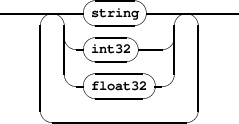
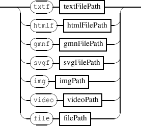
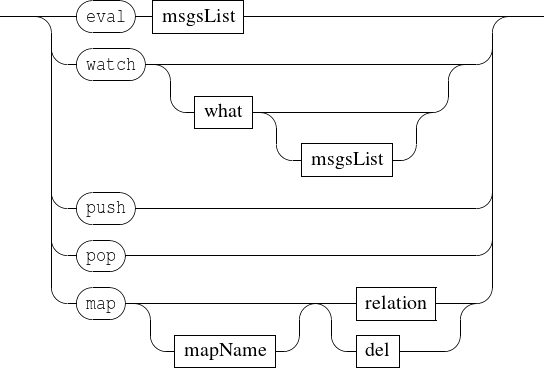
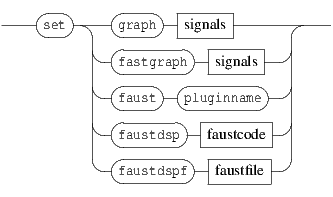
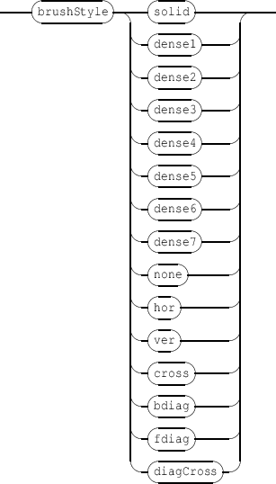
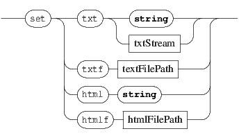

Chapter 4
The ’set’ message
The set messages can be sent to any address with the form /ITL/scene/identifier. The global form of the
message is:
-
-
setMsg 
It sets a scene component data.
When there is no destination for the OSC address, the component is first created before being given the
message.
When the target destination type doesn’t correspond to the message type, the object is replaced by an adequate
object.
4.1 Symbolic music notation
Symbolic music notation support is based on the Guido Music Notation format [GMN] or on the MusicXML
format. MusicXMl is supported via conversion to the GMN format when the MusicXML library is
present.
-
-
setMsg 
- gmn: a Guido score defined by a GMN string.
- gmnf: a Guido score defined by a GMN file.
- gmnstream: a Guido score defined by a GMN stream (a GMN string that can be written in several
times).
- musicxml: a score defined by a MusicXML string.
- musicxmlf: a score defined by a MusicXML file.
EXAMPLE
Creating a music score using a Guido Music Notation language string.
/ITL/scene/myObject set gmn "[ a b g ]";
Creating the same music score as a stream.
/ITL/scene/myObject set gmnstream "[ a";
/ITL/scene/myObject write "b";
/ITL/scene/myObject write "g";
NOTE For compatibility with previous versions, passing a MusicXML string to a gmn object or a MusicXML file to a gmnf
object may succed since the system tries to parse the content as GMN content or as MusicXML content when the
former fails.
NOTE Conversion from MusicXML to GMN could be achieved manually using a command line tool that is distributed
with the MusicXML library (see at http://code.google.com/p/libmusicxml/). It allows to improve the output
GMN code afterhand.
4.2 Textual components
-
-
setMsg 
- txt: a textual component.
- txtf: a textual component defined by a file.
- html: an html component defined by an HTML string.
- htmlf: an html component defined by an HTML file.
Text may be specified by a single quoted string or using an arbitrary count of parameters that are converted to a
single string with a space used as separator.
-
-
txtStream 
EXAMPLE
Creating a text object.
/ITL/scene/myObject set txt "Hello ... world!";
Setting the content of a text object using a values stream.
/ITL/scene/myObject set txt Hello 1 world and 0.5;
4.3 Vectorial graphics
-
-
setMsg 
- svg: SVG graphics defined by a SVG string.
- svgf: vectorial graphics defined by a SVG file.
- rect: a rectangle specified by a width and height. Width and height are expressed in scene
coordinates space, thus a width or a height of 2 corresponds to the width or a height of the scene.
- ellipse: an ellipse specified by a width and height.
- polygon: a polygon specified by a sequence of points, each point being defined by its (x,y)
coordinates. The coordinates are expressed in the scene coordinate space, but only the relative
position of the points is taken into account (i.e a polygon A = { (0,0) ; (1,1) ; (0,1) } is equivalent to
a polygon B = { (1,1) ; (2,2) ; (1,2) }).
- curve: a sequence of 4-points bezier cubic curve. If the end-point of a curve doesn’t match the
start-point of the following one, the curves are linked by a straight line. The first curve follows the
last curve. The inner space defined by the sequence of curves is filled, using the object color. The
points coordinates are handled like in a polygon.
- line: a simple line specified by a point (x,y) expressed in scene coordinate space or by a width and
angle. The point form is used to compute a line from (0,0) to (x,y), which is next drawn centered on
the scene.
EXAMPLE
Creating a rectangle with a 0.5 width and a 1.5 height.
/ITL/scene/myObject set rect 0.5 1.5;
Creating a line specified using width and angle.
/ITL/scene/myObject set line wa 1. 45.;
4.4 Signals and graphic signals
Signals are special objects that are stored in a special signal node and that may be composed in parallel to produce
graphic signals. Signals and graphic signals are decribed in section 12 p.85.
Signals and computation on signals may be based on FAUST objects that are actually signals processors. FAUST
objects are decribed in section 15.1 p.123.
For more information about the FAUST language, see at http://faust.grame.fr.
-
-
setMsg 
- graph: graphic of a signal. See section 12 p.85 for details about the graph objects data.
- fastgraph: fast rendering graphic signal. See also section 12 p.85.
- faust: a FAUST object as a plugin (see section 15.1)
- faustdsp: a FAUST object defined by a string (see section 15.1 p.123)
- faustdspf: a FAUST object defined by a file (see section 15.1 p.123)
4.5 Images and video
Images and video are supported using various formats. See section 4.7 p.37 for more details on the supported
formats.
-
-
setMsg 
- img: animage file. The image format is infered from the file extension.
- video: a video file. The video format is infered from the file extension. Note that navigation through
the video is made using its date.
EXAMPLE
Creating an image.
/ITL/scene/myObject set img "myImage.png";
4.6 Miscellaneous
-
-
setMsg 
- layer: a graphic layer, may be viewed as a container (see 9 p.67).
- grid: a white transparent object that provides a predefined time to graphic mapping (see section 6.5
p.50 for more details and section 10 p.69 for time to graphic relations). The parameters are int32
values representing the number of columns and rows.
4.7 The file type
-
-
setFile 
- file: a generic type to handle file based objects. Actually, the file type is translated into a one of
the txtf, gmnf, img or video types, according to the file extension (see table 4.1).
See also: the application rootPath message (section 7 p.54) for file based objects.
Table 4.1: File extensions supported by the file translation scheme.
|
|
| file extension | translated type |
|
|
| .txt .text | txtf |
| .htm .html | htmlf |
| .gmn | gmnf |
| .xml | musicxmlf |
| .svg | svgf |
| .jpg .jpeg .png .gif .bmp .tiff | img |
| .avi .wmv .mpg .mpeg .mp4 .mov .vob | video |
| .dsp | faustdspf |
|
|
| |
EXAMPLE
Creating an image using the file type.
/ITL/scene/myObject set file "myImage.png";
will be translated into
/ITL/scene/myObject set img "myImage.png";